8화, 그림 16장. 그림 위에 영어 말풍선이 있어요. 점선 말풍선은 전화 속 목소리, 테두리 굵은 흰 상자는 폰 화면이에요. 한국어 뜻은 그림 밑에 있어요. 그림을 누르면 말풍선이 꺼지고 켜집니다.
시작하기 전에
개똥이와 삼룡이는 학생 영상 대회에 낼 영화를 다 찍었어요. 오늘 오후 6시까지 올리면 돼요. 영화가 든 카메라는 개똥이의 노란 가방 안에 있어요.
그런데 지하철에서 똑같은 노란 가방이 바뀌어요. 다른 점은 별 열쇠고리 하나예요.
개똥이15 · 감독
삼룡이15 · 촬영
모자 남자바뀐 가방의 임자?
1화
같은 가방
3:40 PM · 17과 have
1화 1장
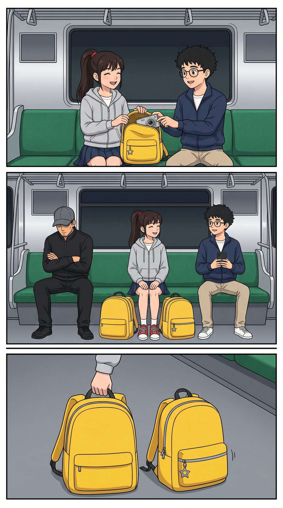
삼룡이, we have it! The last shot!
Upload by six. Don't lose that bag.
3:40 PM · 2h 20m left
컷 1 · 시각3:40 PM · 2h 20m left오후 3시 40분 · 마감 2시간 20분 전
컷 1 · 개똥이삼룡이, we have it! The last shot!삼룡아, 됐다! 마지막 장면까지!
컷 1 · 삼룡이Upload by six. Don't lose that bag.6시까지 올려야 해. 그 가방 잃어버리지 마.
1화 2장
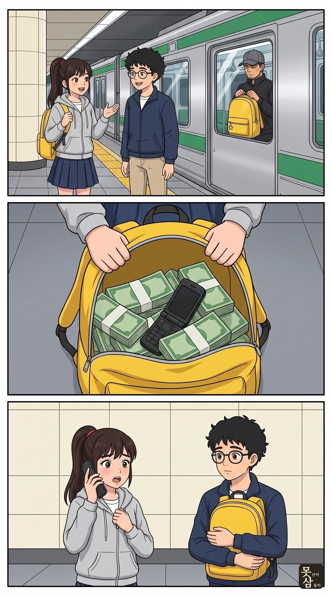
Money?! I have the wrong bag!
You have my bag.
컷 2 · 개똥이Money?! I have the wrong bag!돈?! 가방이 바뀌었어!
컷 3 · 전화 · 모자 남자You have my bag.네가 내 가방을 갖고 있지.
2화
열어 봤어?
3:50 PM · 18과 현재완료
2화 1장
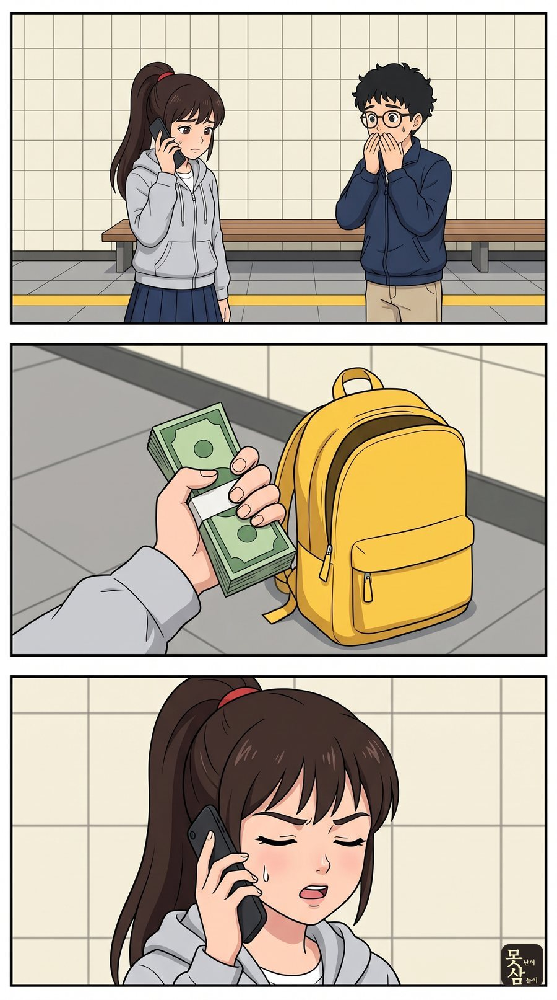
Listen carefully. Have you opened it?
I have met many liars, kid.
No. I haven't. I haven't seen anything.
3:50 PM · 2h 10m left
컷 1 · 시각3:50 PM · 2h 10m left오후 3시 50분 · 마감 2시간 10분 전
컷 1 · 전화 · 모자 남자Listen carefully. Have you opened it?잘 들어. 열어 봤어?
컷 2 · 전화 · 모자 남자I have met many liars, kid.거짓말쟁이는 많이 만나 봤다, 꼬마야.
컷 3 · 개똥이No. I haven't. I haven't seen anything.아니요. 안 열었어요. 아무것도 못 봤어요.
2화 2장
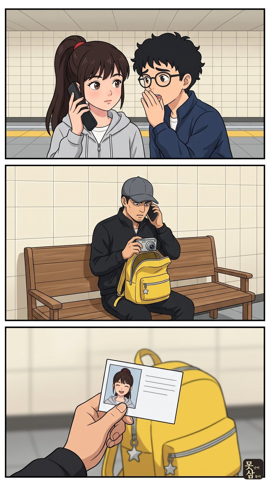
Wait. Have you left your student card in there?
I have opened yours, too. Nice camera.
And I have seen your face, 개똥이.
컷 1 · 삼룡이Wait. Have you left your student card in there?잠깐. 너 학생증 그 가방에 넣어 뒀어?
컷 2 · 모자 남자I have opened yours, too. Nice camera.나도 네 가방 열어 봤다. 카메라 좋던데.
컷 3 · 모자 남자And I have seen your face, 개똥이.네 얼굴도 봤고. 개똥이.
3화
6시까지
4:10 PM · 19과 have to
3화 1장
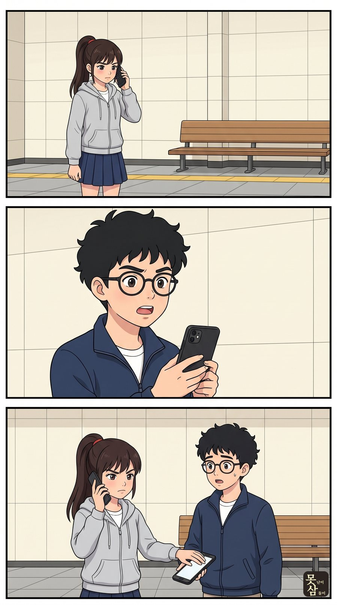
City Hall Station lockers. You have to come alone.
We have to call the police. Now!
Police? Then your camera goes in the river.
4:10 PM · 1h 50m left
컷 1 · 시각4:10 PM · 1h 50m left오후 4시 10분 · 마감 1시간 50분 전
컷 1 · 전화 · 모자 남자City Hall Station lockers. You have to come alone.시청역 사물함. 혼자 와야 한다.
컷 2 · 삼룡이We have to call the police. Now!경찰에 신고해야 해. 지금!
컷 3 · 전화 · 모자 남자Police? Then your camera goes in the river.경찰? 그럼 네 카메라는 강물에 버린다.
3화 2장
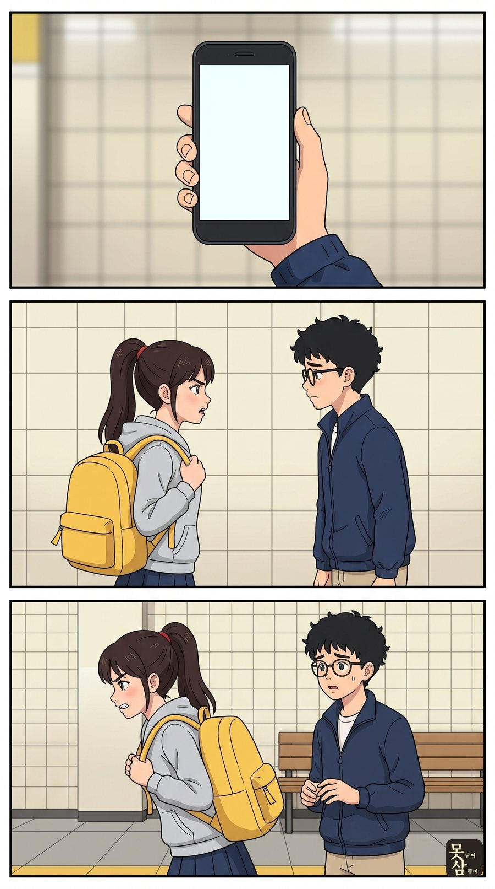
Student Video ContestUploads close TODAY at 6:00 PMYour film: not uploaded
We have to get it back. Before six.
컷 1 · 폰 화면Student Video Contest / Uploads close TODAY at 6:00 PM / Your film: not uploaded학생 영상 대회 / 오늘 오후 6시에 올리기 마감 / 우리 영화: 아직 안 올림
컷 2 · 개똥이We have to get it back. Before six.되찾아야 해. 6시 전에.
4화
할머니의 문자
4:40 PM · 20과 have + 명사
4화 1장
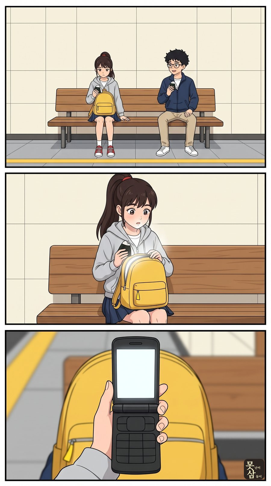
Have a bite. You need your strength.
Wait. Something in here just lit up.
Message · Unknown · 2:12 PMGrandma, I had an accident.I need money now. Don't call me.
4:40 PM · 1h 20m left
컷 1 · 시각4:40 PM · 1h 20m left오후 4시 40분 · 마감 1시간 20분 전
컷 1 · 삼룡이Have a bite. You need your strength.한 입 먹어. 힘 내야지.
컷 2 · 개똥이Wait. Something in here just lit up.잠깐. 안에서 뭐가 켜졌어.
컷 3 · 폰 화면Message · Unknown · 2:12 PM / Grandma, I had an accident. / I need money now. Don't call me.문자 · 모르는 번호 · 오후 2시 12분 / 할머니, 나 사고 났어. / 돈이 급해. 전화하지 마.
4화 2장
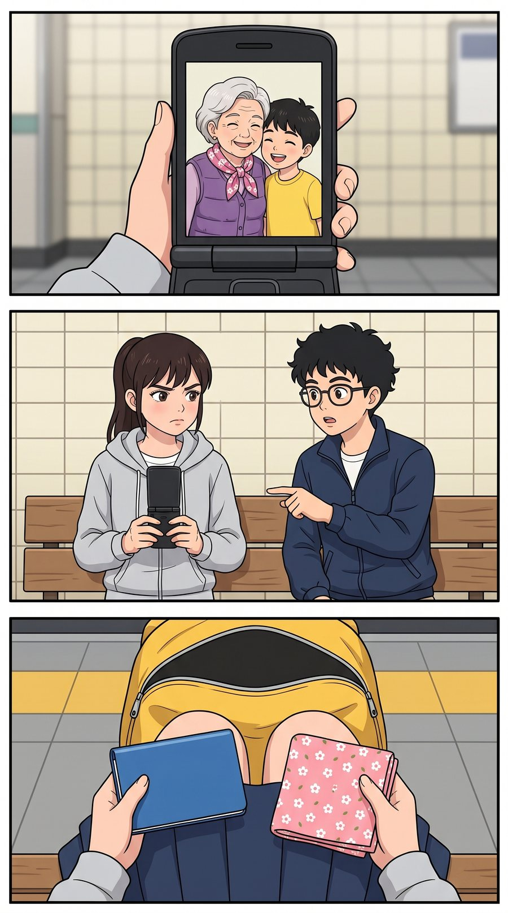
Wait. Who is this grandma?
I have a really bad feeling.
컷 2 · 개똥이Wait. Who is this grandma?잠깐. 이 할머니 누구지?
컷 2 · 삼룡이I have a really bad feeling.느낌이 진짜 안 좋아.
5화
알겠다
5:05 PM · 21과 get
5화 1장
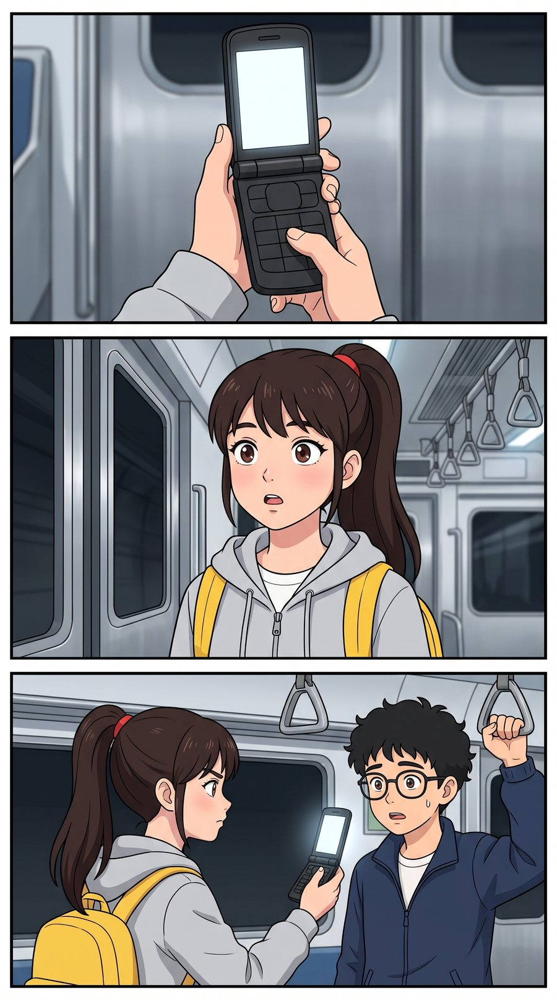
Message · Unknown · 2:30 PMMy friend will get the bag.City Hall Station. 3 PM. Come alone.
I get it. It's her money. He's a scammer.
New message · nowI got your student card.Lockers. 5:20. Or I visit your school.
5:00 PM · 1h left
컷 1 · 시각5:00 PM · 1h left오후 5시 · 마감 1시간 전
컷 1 · 폰 화면Message · Unknown · 2:30 PM / My friend will get the bag. / City Hall Station. 3 PM. Come alone.문자 · 모르는 번호 · 오후 2시 30분 / 내 친구가 가방을 받으러 갈 거야. / 시청역. 오후 3시. 혼자 와.
컷 2 · 개똥이I get it. It's her money. He's a scammer.알겠다. 할머니 돈이야. 저 사람 사기꾼이야.
컷 3 · 폰 화면New message · now / I got your student card. / Lockers. 5:20. Or I visit your school.새 문자 · 방금 / 네 학생증, 나한테 있다. / 사물함. 5시 20분. 아니면 너희 학교로 간다.
5화 2장
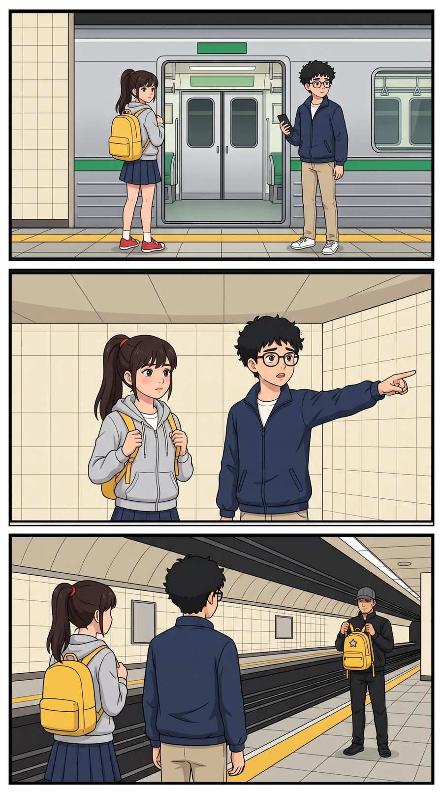
There! How did he get here first?
삼룡이, go get help. I'll stall him.
5:05 PM · City Hall
컷 1 · 시각5:05 PM · City Hall오후 5시 5분 · 시청역
컷 2 · 삼룡이There! How did he get here first?저기! 어떻게 먼저 와 있지?
컷 3 · 개똥이삼룡이, go get help. I'll stall him.삼룡아, 가서 도움 불러와. 내가 시간 끌게.
6화
두 가방
5:20 PM · 22과 take
6화 1장
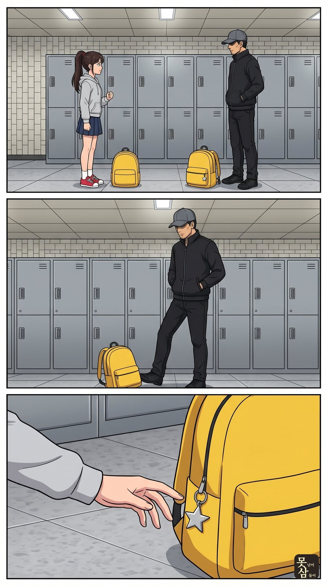
I'm here. Alone. Where's my camera?
Take yours. Your little film is safe.
5:20 PM · 40 min left
컷 1 · 시각5:20 PM · 40 min left오후 5시 20분 · 마감 40분 전
컷 1 · 개똥이I'm here. Alone. Where's my camera?왔어요. 혼자. 내 카메라 어딨어요?
컷 2 · 모자 남자Take yours. Your little film is safe.네 거 가져가. 네 영화는 멀쩡해.
6화 2장
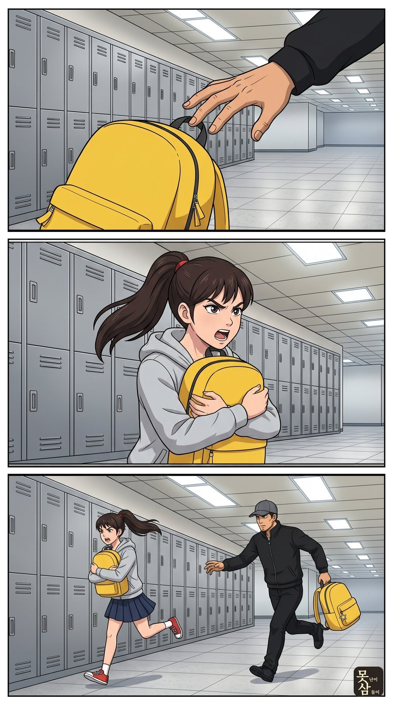
And I take mine. Nobody gets hurt.
It's not yours.
Stop! You can't take that!
컷 1 · 모자 남자And I take mine. Nobody gets hurt.난 내 걸 가져가고. 아무도 안 다친다.
컷 2 · 개똥이It's not yours.그거 아저씨 거 아니잖아요.
컷 3 · 모자 남자Stop! You can't take that!거기 서! 그건 못 가져가!
7화
찍혔다
5:35 PM · 23과 have · get · take
7화 1장
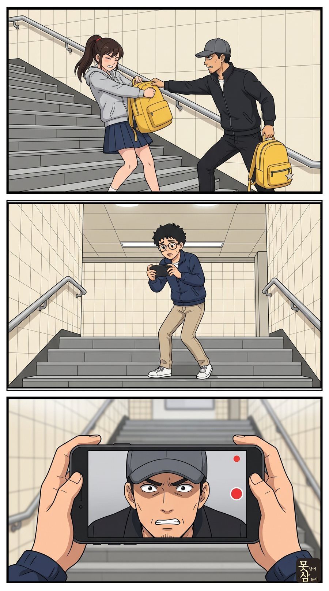
Let go, kid. Now!
Hey! I've got your face on camera!
Everything. I got it all on video.
5:35 PM · 25 min left
컷 1 · 시각5:35 PM · 25 min left오후 5시 35분 · 마감 25분 전
컷 1 · 모자 남자Let go, kid. Now!놔, 꼬마. 당장!
컷 2 · 삼룡이Hey! I've got your face on camera!아저씨! 얼굴 다 찍혔어요!
컷 3 · 삼룡이Everything. I got it all on video.전부요. 다 영상으로 찍었어요.
7화 2장
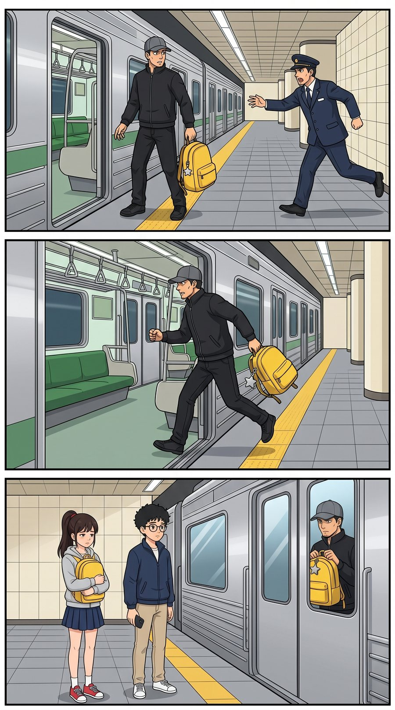
Hey! You! Stop right there!
He took my bag. Our film...
컷 1 · 역무원Hey! You! Stop right there!거기! 당신! 멈춰요!
컷 3 · 개똥이He took my bag. Our film...내 가방을 가져갔어. 우리 영화…
8화
주인
5:45 PM · 24과 총정리
8화 1장
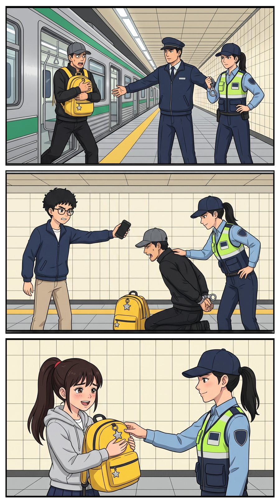
This train isn't going anywhere.
Off the train. Now.
That's not my bag!
We know. We've got the video.
Yes! It's mine!
Is this yours?
5:45 PM · 15 min left
컷 1 · 시각5:45 PM · 15 min left오후 5시 45분 · 마감 15분 전
컷 1 · 역무원This train isn't going anywhere.이 열차는 아무 데도 안 가.
컷 1 · 경찰관Off the train. Now.열차에서 내려요. 당장.
컷 2 · 모자 남자That's not my bag!그거 내 가방 아니야!
컷 2 · 경찰관We know. We've got the video.알아요. 영상이 다 있거든요.
컷 3 · 경찰관Is this yours?이거 학생 거예요?
컷 3 · 개똥이Yes! It's mine!네! 제 거예요!
8화 2장
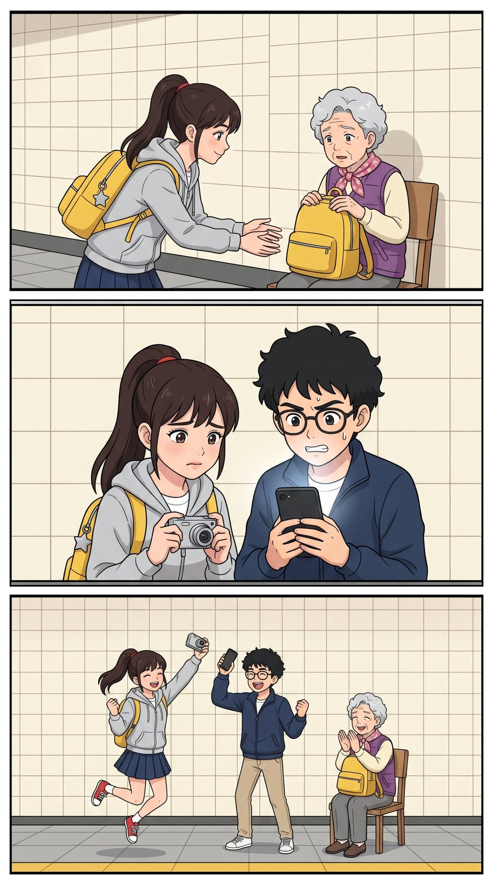
You have your bag.
You got it back... for me?
Student Video ContestUploading… 99%5:59 PM
Come on. Come on. Come on!
We have our film. And she has hers.
Uploaded! At 5:59!
5:55 PM · 5 min left
6:00 PM
컷 1 · 시각5:55 PM · 5 min left오후 5시 55분 · 마감 5분 전
컷 1 · 개똥이You have your bag.할머니 가방이에요. 이제 할머니한테 있어요.
컷 1 · 할머니You got it back... for me?그걸… 나 주려고 찾아왔니?
컷 2 · 폰 화면Student Video Contest / Uploading… 99% / 5:59 PM학생 영상 대회 / 올리는 중… 99% / 오후 5시 59분
컷 2 · 삼룡이Come on. Come on. Come on!제발. 제발. 제발!
컷 3 · 시각6:00 PM오후 6시
컷 3 · 개똥이We have our film. And she has hers.우린 영화를 찾았고, 할머니는 할머니 걸 찾았어.
컷 3 · 삼룡이Uploaded! At 5:59!올라갔어! 5시 59분에!
다 읽고 나서
모자 남자는 열차 앞에서 잡혔어요. 삼룡이가 찍은 영상 덕분이에요. 개똥이는 자기 가방을 되찾았고, 할머니 가방은 할머니에게 돌려줬어요. 영화는 마감 1분 전, 5시 59분에 올라갔어요.
이 만화를 꿰는 문장 셋이에요. have는 「가지고 있다」예요. 가방이 누구 손에 있는지가 이 이야기 전부예요.